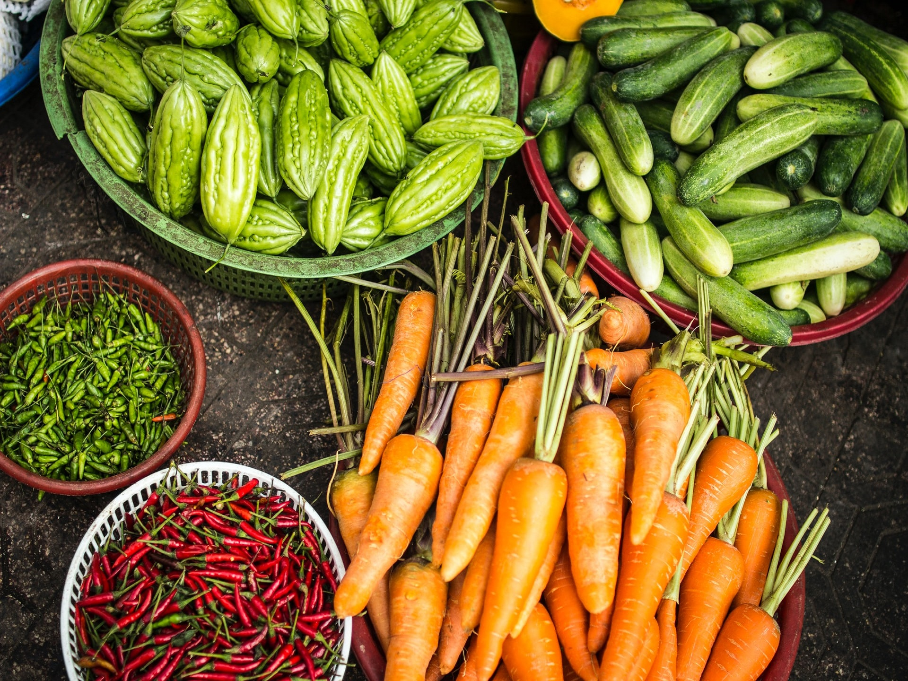
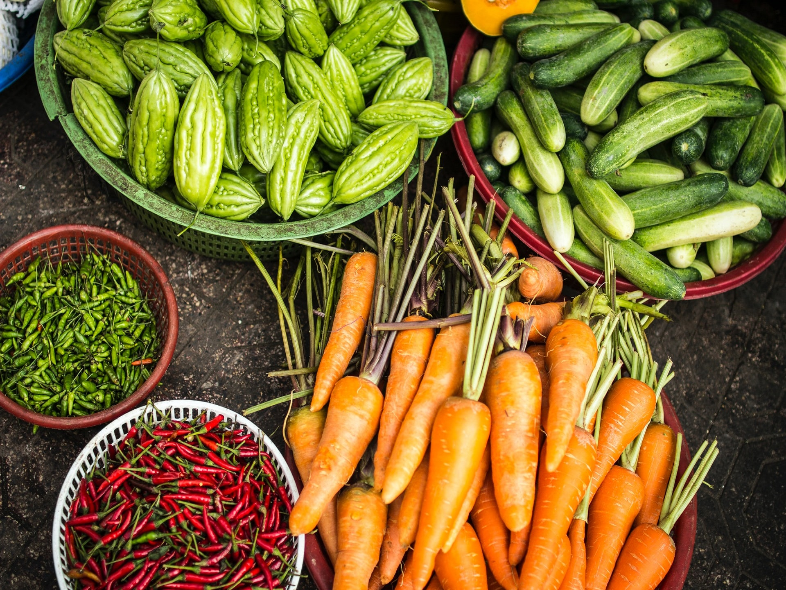
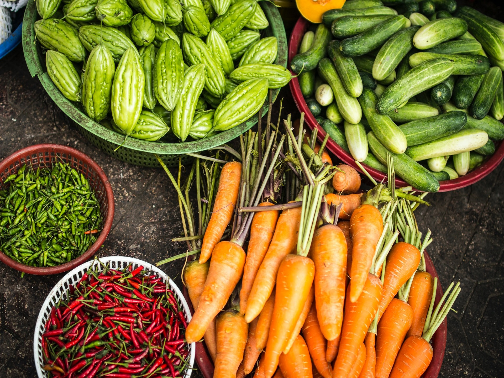

Trabajamos con diferentes campesinos y productores del país quienes con su experiencia y técnicas
orgánicas nos permiten acercar el campo a tu casa, a través de alimentos libres de agroquímicos que
te ayudarán a tener una vida saludable.

Nuestros Productos
Generamos mejoras sustentables en el bienestar de todas las personas que participan en
nuestros procesos, clientes, productores y colaboradores, por medio del comercio justo,
la inclusión social y el cuidado del medio ambiente.
 
